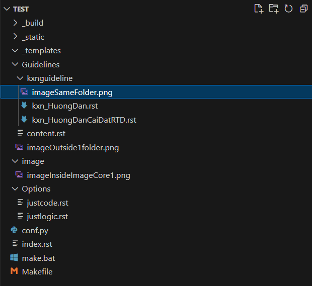
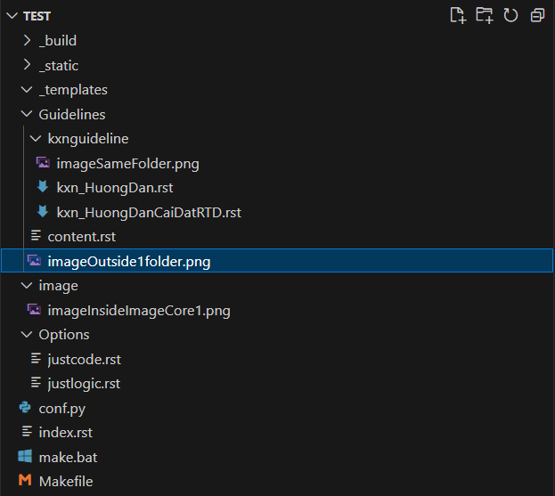
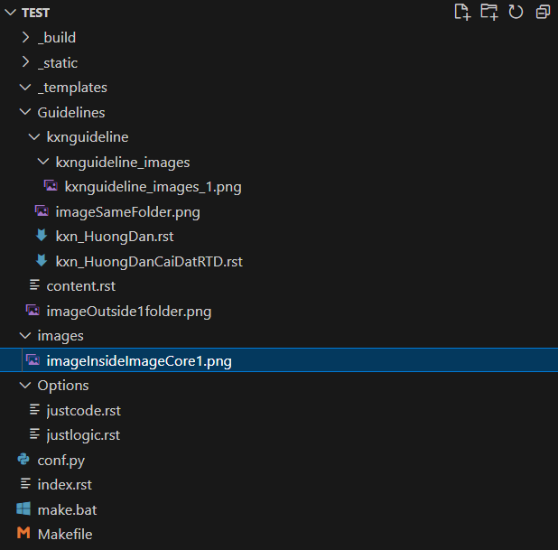
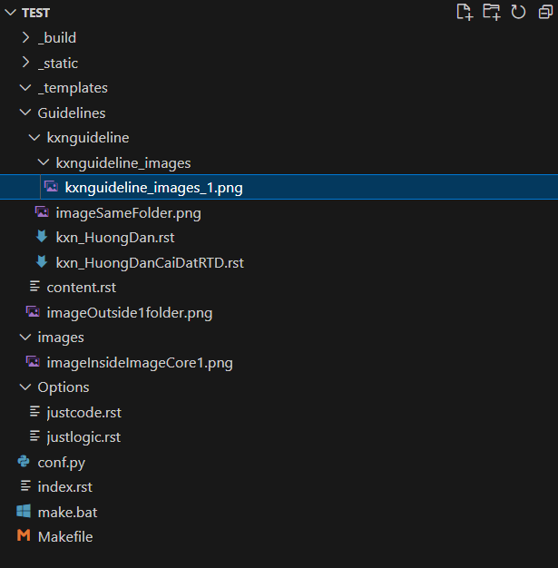

1.1. KXN hướng dẫn
1.1.1. Text Format
- Đây là một đoạn văn bản bình thường. Chỉ viết ra cho dài để có nội dung hướng dẫn về một số kiểu như:
in nghiêng
in đậm
nhấn mạnh.
- Đây là đoạn văn bản số hai. Cũng chỉ để:
hiển thị.- test
pulleted: Dòng 1
Dòng 2
- test
- Test
numbered: Num 1.
Num 2.
Num 3.
Num 4.
- Test
1.1.2. Tạo lưu ý
Chú ý
I'm attention.
Cảnh báo
I'm caution.
Nguy hiểm
I'm danger.
Lỗi
I'm error.
Gợi ý
I'm hint.
Quan trọng
I'm important.
Ghi chú
I'm note.
Mẹo
I'm tip.
Cảnh báo
I'm warning.
Xem thêm
I'm seealso.
Cảnh báo
Cảnh báo
Cảnh bảo điều gì đó test!
Nguy hiểm
Nguy hiểm
Mẹo
Gợi ý
code mẫu note:
.. note::
* Ghi chú 1
* Ghi chú 2
* Ghi chú 3
* Ghi chú 4
Ghi chú
Ghi chú 1
Ghi chú 2
Ghi chú 3
Ghi chú 4
Một đoạn văn bản bên ngoài note.
1.1.3. Định nghĩa từ
Mẹo
:term:`kxn_glossary`
1.1.4. Image
Xem thêm
- Hình cùng folder kxnguideline với file kxn_HuongDan.rst:
.. image:: imageSameFolder.png
- Hình khác folder với file kxn_HuongDan.rst:
.. image:: /Guidelines/imageOutside1folder.png
- Hình ở folder images ngoài cùng:
.. image:: /images/imageInsideImageCore1.png
- Hình nằm trong thư mục đồng cấp với file kxn_HuongDan.rst:
.. image:: kxnguideline_images/kxnguideline_images_1.png
Hình nằm trong thư mục đồng cấp với file kxn_HuongDan.rst fix width:
.. figure:: kxnguideline_images/kxnguideline_images_1.png :width: 200px :scale: 50 % :alt: kxnguideline_images_1.png :align: left kxnguideline_images_1.png
{kind=link}
kxnguideline_images_1.png
Most searched terms
Hình nằm trong thư mục đồng cấp với file kxn_HuongDan.rst fix scale:
.. image:: kxnguideline_images/kxnguideline_images_1.png`` :scale: 50 % :alt: alternate name image :align: center
1.1.5. video
Code tham khảo:
.. raw:: html
<div style="position: relative; padding-bottom: 56.25%; height: 0; overflow: hidden; max-width: 100%; height: auto;">
<iframe width="560" height="315" src="https://www.youtube.com/embed/oqhAe4JNsaE?si=OAmh2o5RoiXNSAvV" frameborder="0" allowfullscreen style="position: absolute; top: 0; left: 0; width: 100%; height: 100%;"></iframe>
</div>
<br>
1.1.6. Table:
Cách 1: dùng tool:
Nhập nội dung vào trang này để tạo table.
STT |
Họ |
Tên |
Ghi chú |
|---|---|---|---|
1 |
Khưu Xuân |
Ngọc |
Kỹ thuật, bán hàng |
2 |
Khưu Xuân |
Thạch |
Bán hàng, mua hàng |
Cách 2, gọi lệnh:
Cột 1 |
Cột 2 |
Cột 3 |
|---|---|---|
Dòng 1 |
Dòng 1 |
Dòng 1 |
Dòng 2 |
Dòng 2 |
Dòng 2 dài iiiiiiiiiiiiiiiiiiiiiiiiiiiiiiiiiiiiii |
Code tham khảo:
.. list-table::
:widths: 30 30 30
:header-rows: 1
:name: example-table
:class: tight-table
* - Cột 1
- Cột 2
- Cột 3
* - Dòng 1
- Dòng 1
- Dòng 1
* - Dòng 2
- Dòng 2
- Dòng 2 dài iiiiiiiiiiiiiiiiiiiiiiiiiiiiiiiiiiiiii
1.1.7. Hiberlink:
Code chèn link hshop:
`hshop <https://documatt.com/restructuredtext-reference/element/code-block.html>`_
1.1.8. Working with References
Đây là ví dụ về :ref:, thamKhao-TextFormat
Xem thêm
Ví dụ:
.. _reference-target-name::
Đây là nội dung bạn cần tham chiếu đến.
Đây là cách bạn trỏ đến tham chiếu ở trên, :ref:`reference-target-name`
1.1.9. Code mẫu:
Đây là code Arduino:
begin() function.1void setup(){
2 Serial.begin(9600);
3}
1.1.10. Hiển thị nội dung của một file .rst khác sang kxn_HuongDan.rst
Đây là nội dung của file kxn_template.rst.
Mẹo
Dùng lệnh này để lấy nội dung của file hiển thị ra một file rst khác:
.. include:: /template/kxn_template.rst
Thường được sử dụng khi có nhiều file .rst khác có cùng một nội dung cần hiển thị
1.1.11. hlist
Code:
.. hlist::
:columns: 2
* hlist
* Mạch Vietduino Mega 2560 (Arduino Mega2560 Compatible)
* Mạch Vietduino Wifi BLE ESP32 (Arduino Compatible)
|
|